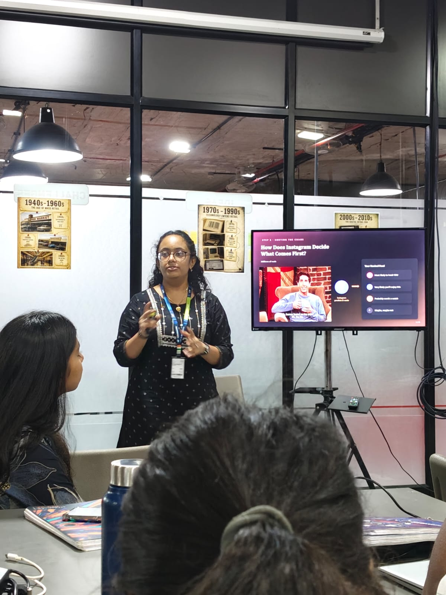

Day 1 – Instagram and Design Thinking
The first session was a tech talk by Vedika about Instagram, its feed, and how Instagram decides what users see. We learned how the platform uses user interests and behaviour to make the feed more relevant. It was interesting to understand the technology behind something we use every day.

Later, we had a session with Meera Ma'am on Design Thinking. She gave us a creative task: if someone had thirty circles, what could they do with them? There were no restrictions, so we were encouraged to think beyond the obvious. Our team chose the pharmacy sector and created a poster based on our ideas. Choosing pharmacy helped us explore how creativity and design thinking could be applied to a real industry.